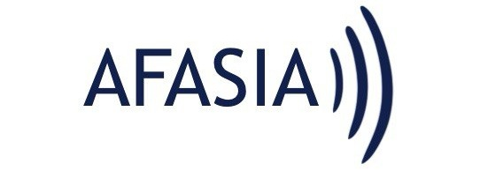

¡Bienvenid@s a Hablando de afasia!
Hablando de afasia es una página web que hemos creado el personal de enfermería del área de Neurología del Hospital de la Poca Esperanza. Nuestro objetivo es ayudar tanto a pacientes como a aquellos que se relacionen con ellos a mejorar su comunicación y, por lo tanto, mejorar su calidad de vida.
En esta web encontraréis información acerca de qué es la afasia, sus causas y los tipos que existen.
También encontraréis un apartado de recomendaciones, especialmente dirigido al entorno más cercano de las personas con afasia. Si no es tu caso, quizás te interese echarle un vistazo de todas maneras. ¡Seguro que encuentras algo interesante!
Por último, tenemos una sección con recursos útiles tanto para personas con afasia como para aquellos que se relacionen con ellas.
Pacientes, familiares, amigos, vecinos... También profesionales de la salud y futuros profesionales.
¡Todos sois bienvenid@s!